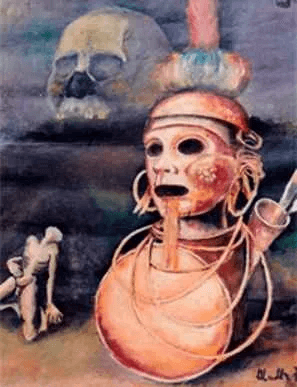

My obras Precolombina inspiradas en las culturas aborígenes Colombianas como los KOGUI , GUAMBIANOS (MISAK), KAMZA y ARAWACOS.
Las lecturas aborígenes de las diferentes etnias son figurativas, semi-abstractas, universales y cosmogonicas.
En la evolución de mis trabajos artísticos encontré diferentes lenguajes semi-abstractas de los animales que nos rodean y las culturas precolombinas llevando a la escultura en madera combinando materiales diversos logrando unas obras inimaginables.
En el arte sigo evolucionando y fusionando la pintura con esculturas en un solo lenguaje convirtiendo en algo tridimensional. Proponiendo algo innovador que rompa esquemas siempre estoy en continua evolución.
Obras, Pinturas y Esculturas
-
Mascara Funeraria
Obra: Mascara Funeraria.
Estilo: Oleo Sobre lienzo
Dimención: Alt: 3.50mtr, Ancho
Año 1995
-
dsfds

dfds
-
sdfds
sfdsf
-
sdfds

sfdsf
-
sdfds

sfdsf